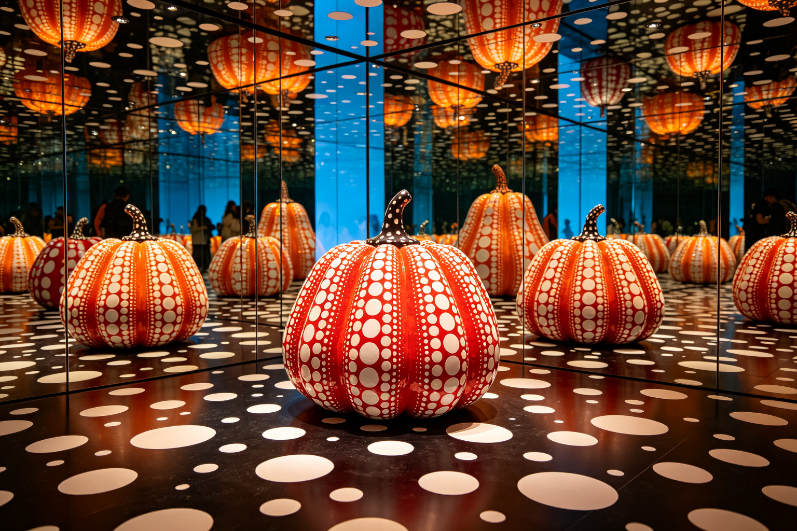

草间弥生艺术 · BEA 双极情绪美学深度分析
分析对象：草间弥生（Yayoi Kusama）艺术作品，1929年至今，日本/美国 分析方法：BEA 双极情绪美学六步法 分析时间：2026-09-13 分析师：BEA 工具生成
一、情绪基调
草间弥生是当代最具影响力的艺术家之一，以其标志性的波点、无限镜屋和南瓜雕塑闻名。整体感受是先锋反叛——重复的波点带来秩序与催眠，而强烈的色彩和反传统的表达带来唤醒与震撼，秩序与反叛在重复的极致中达成最高级的平衡。
- 主导范式：⚡ 先锋反叛（偏诗意朦胧）
- W(T) 危极权重估计：0.68
- 第一情绪：迷幻、震撼、治愈、超越
二、双极构成拆解
亲极元素（P+，秩序/治愈）
| 维度 | 元素 | 极性强度 | 作用 |
|---|---|---|---|
| 重复 | 无限重复的波点，连续的图案 | P+ 7 | 催眠秩序，冥想治愈 |
| 色彩 | 明亮的色彩，温暖的色调 | P+ 6 | 愉悦亲和，不压抑 |
| 形态 | 圆润的南瓜，柔和的造型 | P+ 5 | 亲和友好，无攻击性 |
| 体验 | 沉浸式的体验，包容的空间 | P+ 6 | 治愈抚慰，归属感 |
危极元素（T−，反叛/震撼）
| 维度 | 元素 | 极性强度 | 作用 |
|---|---|---|---|
| 表达 | 反传统的艺术表达，突破常规 | T− 8 | 反叛震撼，先锋感 |
| 尺度 | 无限的尺度，压迫性的重复 | T− 7 | 崇高震撼，迷失感 |
| 对比 | 强烈的色彩对比，视觉冲击 | T− 7 | 注意力捕获，唤醒感 |
| 主题 | 深刻的精神主题，生死的思考 | T− 6 | 思想张力，深度感 |
主辅比与层级策略
- 主辅比：危极约68%，亲极约32%——危极主导但亲极治愈感充足
- 层级策略：范式叠加嵌套（跨范式叙事）——宏观先锋（反传统表达+强烈对比）+中观诗意（无限重复+迷幻体验）+微观治愈（圆润形态+明亮色彩），三层范式叠加创造丰富的精神体验——"治愈的反叛"是草间弥生的BEA诠释。
三、定位：张力 × 秩序 象限
🏆 高张力 × 高秩序 = 美感黄金区（先锋象限）
- 张力：极高（反传统表达、无限尺度、强烈对比、深刻主题）
- 秩序：极高（无限重复、精确图案、连续空间、统一色彩系统）
- 说明：草间弥生是先锋反叛的艺术教科书——用极致重复的秩序框架承载极强的精神张力，做到"反叛而不混乱，震撼而治愈"。它的革命性在于：把个人的精神创伤转化为普遍的艺术体验，用无限重复的波点创造了迷失与治愈并存的独特美学，让每一个观众都能在其中找到自己的精神出口。
四、BEA 四维评分卡
| 维度 | 得分 | 满分 | 评价 |
|---|---|---|---|
| 双极张力 | 25 | 25 | 反叛与治愈的张力极强，精神美学的革命 |
| 结构秩序 | 24 | 25 | 极致重复+精确图案，秩序感极强，独特 |
| 阈值安全 | 22 | 25 | 张力接近审美窗口右缘，部分观众可能不适 |
| 语境适配 | 24 | 25 | 完美匹配当代艺术定位，跨文化的共鸣 |
| 总分 | 95 | 100 | 先锋反叛的艺术最高典范，精神美学的宣言 |
五、核心优点
- 精神张力的深刻表达：把个人的精神创伤转化为普遍的艺术体验，张力不仅在形式，更在精神——"用艺术治愈自己，也治愈世界"
- 极致秩序的高级感：用无限重复的波点建立最强的秩序框架，在重复的极致中创造迷失与超越，"重复中的无限"
- 跨范式叠加的高级结构：宏观先锋+中观诗意+微观治愈，三层范式叠加创造丰富的精神体验，"治愈的反叛"
六、可优化方向
- 商业化的范式平衡：艺术商业化可能稀释精神张力，需要在商业与艺术之间找到平衡
- 数字化的范式创新：数字时代为沉浸式艺术提供了新的可能，需要在传统媒介与数字媒介之间找到新的平衡
- 传承的秩序维护：艺术家个人风格强烈，如何在传承中维护品牌秩序是新的挑战
七、总结
草间弥生艺术是BEA先锋反叛范式的艺术最高典范——用极致重复的秩序框架承载极强的精神张力，做到"反叛而不混乱，震撼而治愈"。它的革命性不仅在艺术，更在精神：在男性主导的艺术界，在精神疾病的困扰中，她用无限重复的波点宣告了女性的力量和精神的超越。它证明了：真正的艺术先锋不是为了反叛而反叛，而是在极致的秩序框架内承载深刻的精神张力，让每一个观众都能在迷失中找到治愈，在震撼中找到超越。这就是BEA所说的"高张力×高秩序"黄金区的艺术终极形态——潮流在变，精神永恒。
本报告由 BEA 双极情绪美学分析工具生成 · 理论作者：星空本空 · CC BY 4.0